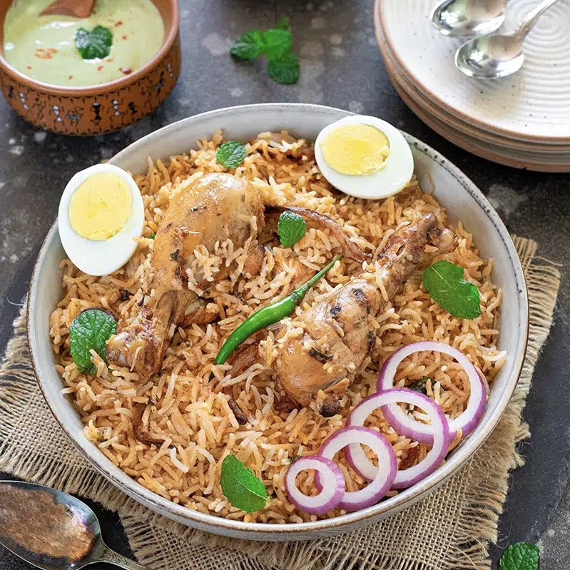
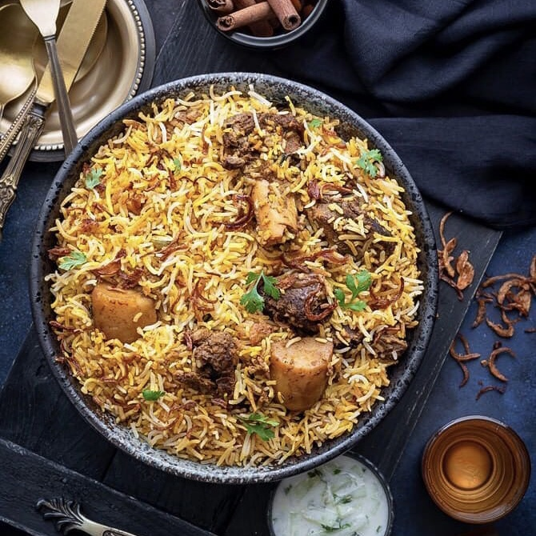
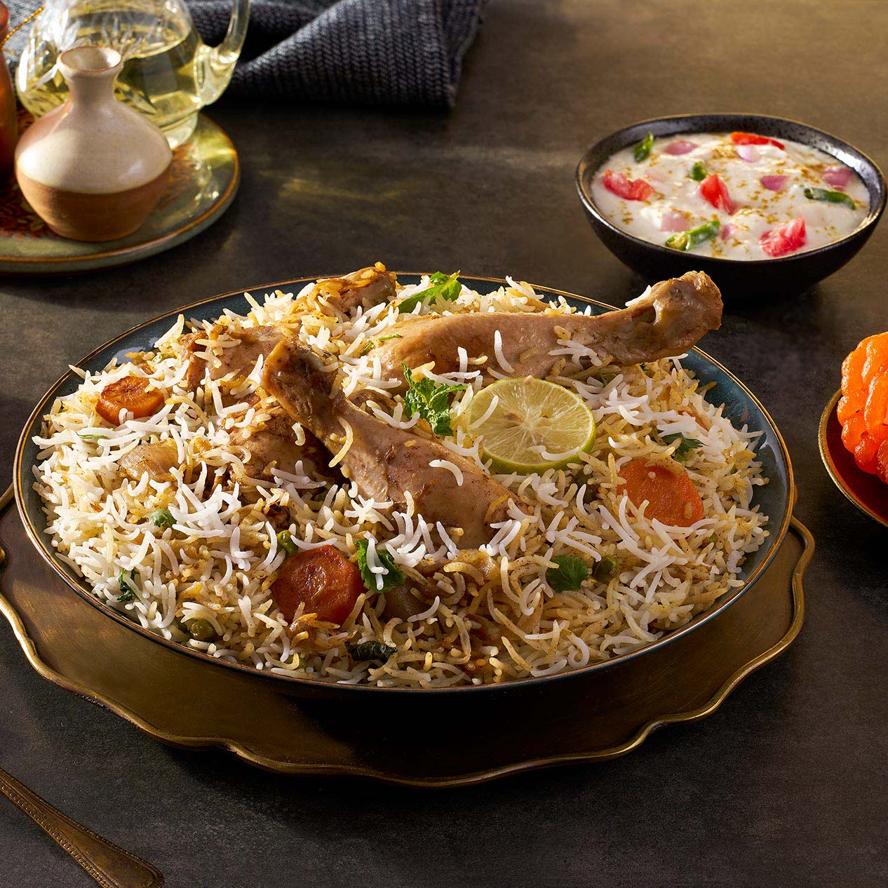

Tastes of Biriyani
Explore. Learn.
Cook.

A classic rice and chicken dish cooked with aromatic spices, widely loved across South Asia, especially in India and Pakistan.
Read More
Made with goat meat and basmati rice, this hearty dish is a favorite in India, particularly in Kolkata and Hyderabad.
Read More
A spicy, layered biryani made with marinated meat and saffron rice, famous in Hyderabad, India.
Read More